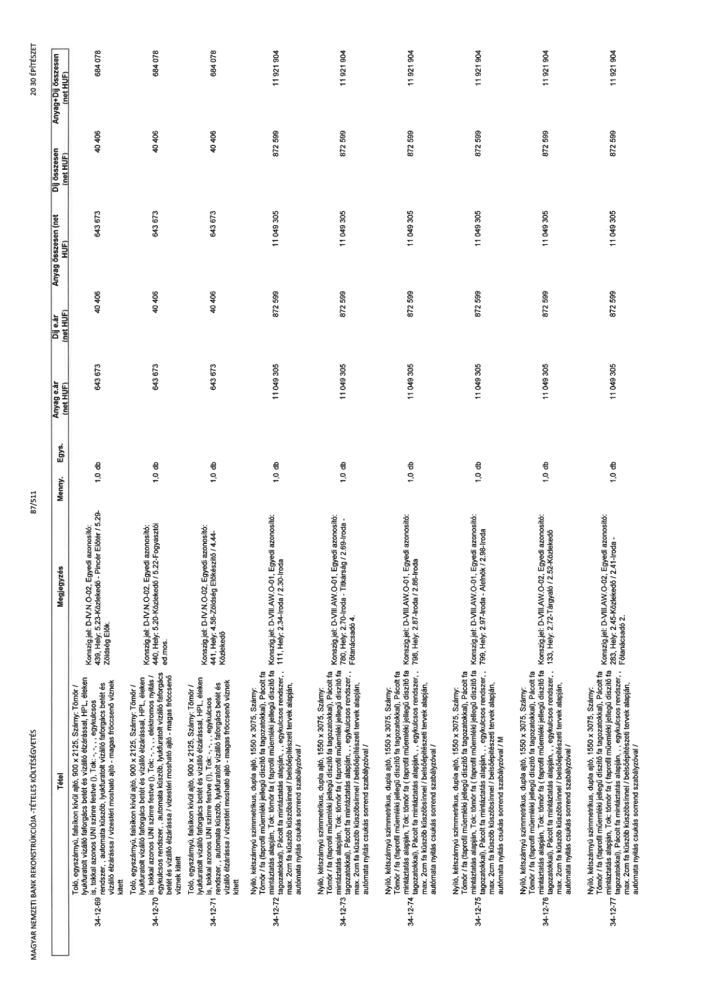

| Tétel | Megjegyzés | Menny. | Egys. | Anyag e.ár (net HUF) | Díj e.ár (net HUF) | Anyag összesen (net HUF) | Díj összesen (net HUF) | Anyag+Díj összesen (net HUF) |
|---|---|---|---|---|---|---|---|---|
| 34-12-69 | Toló, egyszárnyú, falsíkon kívül ajtó, 900 x 2125, Szárny: Tömör / lyukfúratolt vízálló faforgács betét és vízálló élzárással, HPL, éleken is, tokkal azonos UNI színre festve (!), Tok: -, -, -, egykulcsos rendszer,, automata küszöb, lyukfúratolt vízálló faforgács betét és vízálló élzárással / vízestéri mosható ajtó - magas fröccsenő víznek kitett; Konszign.jel: D-IV.N.O-02, Egyedi azonosító: 439, Hely: 5.23-Közlekedő - Pincér Előtér / 5.29-Zöldség Elők. | 1,0 | db | 643 673 | 40 406 | 643 673 | 40 406 | 684 078 |
| 34-12-70 | Toló, egyszárnyú, falsíkon kívül ajtó, 900 x 2125, Szárny: Tömör / lyukfúratolt vízálló faforgács betét és vízálló élzárással, HPL, éleken is, tokkal azonos UNI színre festve (!), Tok: -, -, -, elektromos nyitás / egykulcsos rendszer,, automata küszöb, lyukfúratolt vízálló faforgács betét és vízálló élzárással / vízestéri mosható ajtó - magas fröccsenő víznek kitett; Konszign.jel: D-IV.N.O-02, Egyedi azonosító: 440, Hely: 5.20 Közlekedő / 5.22-Fogyasztói ed.mos. | 1,0 | db | 643 673 | 40 406 | 643 673 | 40 406 | 684 078 |
| 34-12-71 | Toló, egyszárnyú, falsíkon kívül ajtó, 900 x 2125, Szárny: Tömör / lyukfúratolt vízálló faforgács betét és vízálló élzárással, HPL, éleken is, tokkal azonos UNI színre festve (!), Tok: -, -, -, egykulcsos rendszer,, automata küszöb, lyukfúratolt vízálló faforgács betét és vízálló élzárással / vízestéri mosható ajtó - magas fröccsenő víznek kitett; Konszign.jel: D-IV.N.O-02, Egyedi azonosító: 441, Hely: 4.58-Zöldség Előkészítő / 4.44-Közlekedő | 1,0 | db | 643 673 | 40 406 | 643 673 | 40 406 | 684 078 |
| 34-12-72 | Nyíló, kétszárnyú szimmetrikus, dupla ajtó, 1550 x 3075, Szárny: Tömör / fa (faprofil műemléki jellegű díszítő fa tagozatokkal), Pácolt fa mintázatás alapján, Tok: tömör fa (faprofil műemléki jellegű díszítő fa tagozatokkal), Pácolt fa mintázatás alapján,, egykulcsos rendszer,, max. 2cm fa küszöb küszöbsínnel / belsőépítészeti tervek alapján, automata nyitás csukás sorrend szabályzóval /; Konszign.jel: D-VIII.AW.O-01, Egyedi azonosító: 111, Hely: 2.34-Iroda / 2.30-Iroda | 1,0 | db | 11 049 305 | 872 599 | 11 049 305 | 872 599 | 11 921 904 |
| 34-12-73 | Nyíló, kétszárnyú szimmetrikus, dupla ajtó, 1550 x 3075, Szárny: Tömör / fa (faprofil műemléki jellegű díszítő fa tagozatokkal), Pácolt fa mintázatás alapján, Tok: tömör fa (faprofil műemléki jellegű díszítő fa tagozatokkal), Pácolt fa mintázatás alapján,, egykulcsos rendszer,, max. 2cm fa küszöb küszöbsínnel / belsőépítészeti tervek alapján, automata nyitás csukás sorrend szabályzóval /; Konszign.jel: D-VIII.AW.O-01, Egyedi azonosító: 780, Hely: 2.70-Iroda - Titkárság / 2.69-Iroda - Főtanácsadó 4. | 1,0 | db | 11 049 305 | 872 599 | 11 049 305 | 872 599 | 11 921 904 |
| 34-12-74 | Nyíló, kétszárnyú szimmetrikus, dupla ajtó, 1550 x 3075, Szárny: Tömör / fa (faprofil műemléki jellegű díszítő fa tagozatokkal), Pácolt fa mintázatás alapján, Tok: tömör fa (faprofil műemléki jellegű díszítő fa tagozatokkal), Pácolt fa mintázatás alapján,, egykulcsos rendszer,, max. 2cm fa küszöb küszöbsínnel / belsőépítészeti tervek alapján, automata nyitás csukás sorrend szabályzóval /; Konszign.jel: D-VIII.AW.O-01, Egyedi azonosító: 798, Hely: 2.87-Iroda / 2.86-Iroda | 1,0 | db | 11 049 305 | 872 599 | 11 049 305 | 872 599 | 11 921 904 |
| 34-12-75 | Nyíló, kétszárnyú szimmetrikus, dupla ajtó, 1550 x 3075, Szárny: Tömör / fa (faprofil műemléki jellegű díszítő fa tagozatokkal), Pácolt fa mintázatás alapján, Tok: tömör fa (faprofil műemléki jellegű díszítő fa tagozatokkal), Pácolt fa mintázatás alapján,, egykulcsos rendszer,, max. 2cm fa küszöb küszöbsínnel / belsőépítészeti tervek alapján, automata nyitás csukás sorrend szabályzóval / M; Konszign.jel: D-VIII.AW.O-01, Egyedi azonosító: 799, Hely: 2.97-Iroda - Alelnök / 2.98-Iroda | 1,0 | db | 11 049 305 | 872 599 | 11 049 305 | 872 599 | 11 921 904 |
| 34-12-76 | Nyíló, kétszárnyú szimmetrikus, dupla ajtó, 1550 x 3075, Szárny: Tömör / fa (faprofil műemléki jellegű díszítő fa tagozatokkal), Pácolt fa mintázatás alapján, Tok: tömör fa (faprofil műemléki jellegű díszítő fa tagozatokkal), Pácolt fa mintázatás alapján,, egykulcsos rendszer,, max. 2cm fa küszöb küszöbsínnel / belsőépítészeti tervek alapján, automata nyitás csukás sorrend szabályzóval /; Konszign.jel: D-VIII.AW.O-02, Egyedi azonosító: 133, Hely: 2.72-Tárgyaló / 2.52-Közlekedő | 1,0 | db | 11 049 305 | 872 599 | 11 049 305 | 872 599 | 11 921 904 |
| 34-12-77 | Nyíló, kétszárnyú szimmetrikus, dupla ajtó, 1550 x 3075, Szárny: Tömör / fa (faprofil műemléki jellegű díszítő fa tagozatokkal), Pácolt fa mintázatás alapján, Tok: tömör fa (faprofil műemléki jellegű díszítő fa tagozatokkal), Pácolt fa mintázatás alapján,, egykulcsos rendszer,, max. 2cm fa küszöb küszöbsínnel / belsőépítészeti tervek alapján, automata nyitás csukás sorrend szabályzóval /; Konszign.jel: D-VIII.AW.O-02, Egyedi azonosító: 283, Hely: 2.45-Közlekedő / 2.41-Iroda - Főtanácsadó 2. | 1,0 | db | 11 049 305 | 872 599 | 11 049 305 | 872 599 | 11 921 904 |
